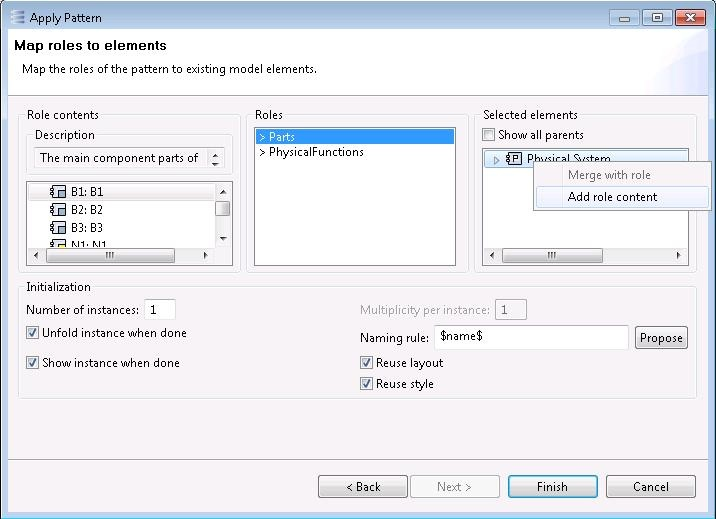
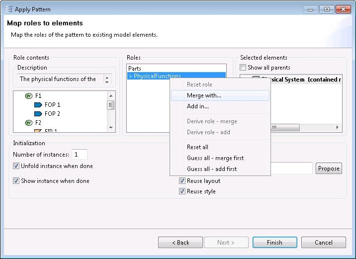

Wizard Page 2: Role Mapping
The second page allows the user to associate the roles of the pattern with elements of the target model. Every role can be 'merged with' or 'added in' elements of the target model. This will result in the corresponding pattern elements being actually merged or added. Note that this page will generally be pre-configured due to an automatic attempt of the tool to apply the pattern in 'reuse' mode.

The page is composed of 3 sections.
- The 'Roles' section in the middle of the page allows the user to select a role to associate. The roles which are free (still to be associated) are marked with a '>'.
- The 'Role contents' section on the left-hand side aims at guiding the user. It shows the description of the selected role and the pattern elements which are mapped to it.
- The 'Selected elements' section on the right-hand side shows the elements which are selected and allows associating them to the role currently selected. The usage of fonts and colours is similar to pattern creation
(see section 'Pattern Creation': pattern elements are replaced with elements of the target model). The role/element association can be set via menu items: 'Merge with role' associates the element for merge and 'Add role as content' for addition. Those menu items are disabled if the element and the role are not compatible.
To associate a role with an element which is not present in the 'Selected elements' section, use the 'Merge with…' or 'Add in…' menu item.

It pops up a dialog which proposes compatible elements only.
- In the case of addition: simply select a container for the pattern elements of the role and click OK.

- In the case of merge when only one pattern element is mapped to the role, a similar dialog pops up: just select the model element to merge with and click OK.
- In the case of merge when several pattern elements are mapped to the role (Functions in the figure below): a more complex dialog pops up (see below). Click the 'Map'/'Unmap' buttons to define the mapping. A pattern element may only be mapped to a single model element and vice versa. Unmapped elements are marked with the '>' prefix. Not all pattern elements need to be mapped: mapped pattern elements will be inserted by merge while unmapped pattern elements will be inserted by addition.

Warning: In Architecture diagrams, Logical/Physical Components are composed of two model elements: a Part (e.g., 'LC1 : LC1') and a Type (e.g., 'LC1'). In order to merge a Component, it is usually necessary to merge both the Part and the Type.
The roles which have a rule for automatic merge/addition
(see section 'Role details') are marked with enclosing parentheses. Right-clicking them pops up dedicated menu items for using the derivation rule for merge ('Derive role - merge') or the derivation rule for addition ('Derive role - addition').
The execution of a derivation rule may fail, either because the rule makes wrong assumptions or because the rule depends on a role which has not been associated to an element yet. An error message is displayed when it happens.

If a mistake has been made, the association of a role to an element can be undone. Right-click the role and select the 'Reset role' menu item for that purpose. To reset the association of all roles, click the 'Reset all' menu item.
The 'Guess all - merge' and 'Guess all - addition' buttons in the middle section aim at automating, when possible, the association of roles to model elements, favouring either merge or addition. This is mostly useful in non-ambiguous cases, where the association can be derived from the compatibility of the elements and the roles and/or the derivation rules of the roles. In ambiguous cases, it can still be useful to click this button after having initiated the role association manually via the other menu items.
The 'Number of instances' text field allows instantiating the pattern several times. This will result in a number of otherwise independent instances.
The 'Multiplicity' text field is only enabled for multi-part patterns
(see section 'Pattern Creation'). The text field allows specifying how many times non-unique pattern elements must be unfolded.
The 'Unfold instance when done' checkbox determines whether the pattern must be unfolded right after the instance is created. 'Unfolding' means that pattern elements are actually added or merged in the model. If the checkbox is not ticked, then an instance is created, in the sense that it is visible in the Pattern Instance Explorer or the Instance Management Panel, but the model is not modified. The instance can be unfolded later, thus actually modifying the model according to the roles, via the Instance Management Panel
(see section 'Instance Management').
If the 'unfold' checkbox is ticked, the 'Naming rule' text field allows modifying the default names of the unfolded elements. Just add a prefix and/or a suffix to the '$name$' symbol (for example: 'V1 $name$_2'). Name uniqueness can be simply enforced by the 'Propose' button. This button proposes a simple naming rule based on suffixes of the form '_1', '_2', etc. such that all the unfolded elements have a unique name within their container, according to the current state of the application. In the case where the 'Number of instances' field contains a number greater than 1, an additional symbol '$nb$' represents the index of the instance within the set of similar instances.
The 'Show instance when done' checkbox determines whether the instance must be shown in the current diagram. Although this is often useful, it is better to leave the checkbox un-ticked in diagrams which are updated automatically, such as Breakdown diagrams. If it is ticked then a second checkbox, called 'Reuse layout', allows specifying whether the graphical shapes of the instance must conform to the original layout of the pattern if applicable. The 'reuse style' checkbox, when checked, allows to apply the style data (colors, fonts, border styles, etc.) related to elements of the pattern to the currently created and/or unfolded instance elements.
The 'Finish' button becomes active when all the 'pure merge' roles (those which do not support addition) have been mapped to a model element. Finishing the wizard results in the creation of a pattern instance which covers all the elements associated to a role.